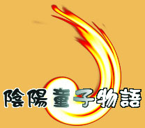

陰陽童子物語 → ダウンロード

はるか昔…
まだ人々が、歴史を刻むすべを知らなかった頃。
大地は腐り、水は淀み、木々は枯れ果て、
世界に、滅びの危機が訪れていた。
これはまだこの世界に…
神々と、精霊たちが住んでいた頃の物語…
----------------------------------------------------------------
「陰陽童子物語」は、面クリア型のアクションパズルゲームです。
５０を超えるバラエティに富んだステージをお楽しみください。
Ｖｅｒ１．１１をダウンロードする（douji.zip 6.26MB）
----------------------------------------------------------------